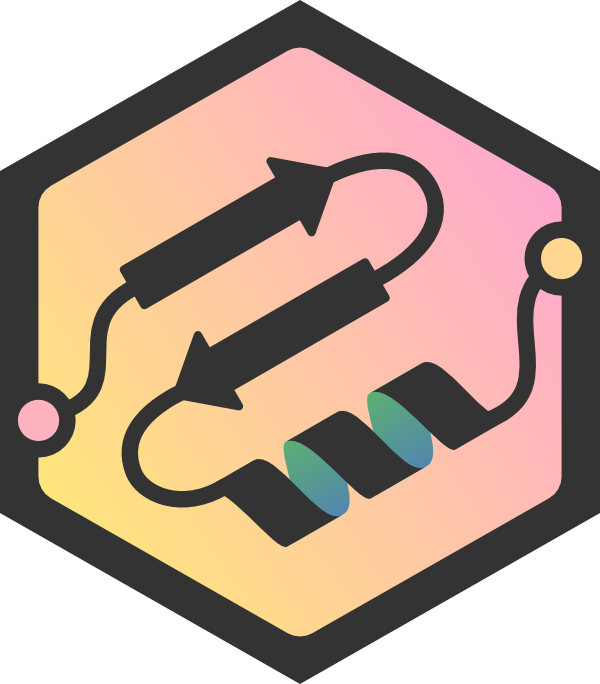

About



Molecular Nodes (MN) is an addon for the 3D modelling & animation program Blender. MN enables easy import of molecular data such as .pdb & .mmCIF, along with a variety of molecular dynamics trajectories and topologies from a variety of simulation sources. Other data formats including electron microscopy (EM) .map, EM tomography files such as .map and .star, with the potential to support more data formats as well.
See the talk below at the 2022 Blender conference for an overview of the add-on it’s capabilities.
Molecular Nodes provides the translation layer that allows importing of molecular data formats, while Blender provides the industry-leading animation and rendering tools to create visually stunning molecular graphics with ease.
The add-on runs on the Geometry Nodes procedural modelling and animation system inside of Blender, which gives the add-on speed and robustness with minimal user input required.
| Procedural Animations | Different Stylings | MD Trajectories |
|---|---|---|
 |
 |
 |
| EM Density maps | .star mapbacks |
|
 |
Getting Started
To get started, checkout the installation page for detailed instructions on how to install the add-on. Next check out some of the tutorials, such as intro to blender, basics of downloading from the PDB or how to customise selections.
There are some outdated tutorials on YouTube about how to use the add-on also. MN has been developed further and improved since these videos, but the general workflow remains the same.